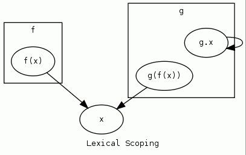
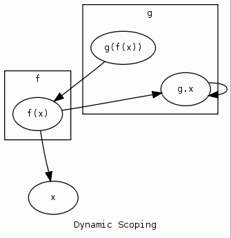

Programming Language Model
Assertions
- Modern computers are finite, specialized implementations of the infinite, general-purpose Turing machine.
- They contain the capability to calculate anything that can be calculated; however, writing software directly for the low-level capabilities is difficult.
- Complexity, portability problems and a low code density between CPU instructions and abstract, algorithmic thought make software development at this level error-prone, slow and tedious.
- High-level programming languages, implement a virtual machine on top of the CPU. While there is great variety in design and implementation of high level languages, all share a common set of infrastructural features in order to reduce the complexity and errors inherent in developing software.
- It is my goal to develop a methodology and accompanying software in order to better understand the precise nature of high level languages and software that is written in them. I hope to be able to analyze, detect defects in and perform other useful transformations on the multitude of applications developed in high level languages.
Model Description
Let a programming language L be an interface to an abstract machine for which the following properties are well-defined:
- scoping
- types
- values
- storage
- functions that modify scoping, types, storage, values and functions(*)
These features all exist in order to provide an interface to the underlying machine's power while reducing complexity and reducing potential programming errors.
Such that a program P would be a directed graph of instruction calls
Consider integer arithmetic as an example of a very simple, practical programming language:
- scoping: (none)
- type: integer
- storage: one single integer
- values: literal integers
- functions: + - * /
Prerequisites
- Interface
- Part of a component exposed to the outside world
- Abstract Machine
- Need a decent definition in here
Scoping
Any programming language providing accessible storage
Familiar examples of such programming languages:
- Algebra
- A calculator containing an M+ or equivalent key
Languages that do not qualify:
- Simple arithmetic expressions
- Stack-based environments that do not allow explicit access to stack storage
Hmm that makes me think now... you don't really ever need directly-accessible storage, do you? A stack-based machine is Turing-complete, so why do we have register-based machines?
Research
Definition
- Consider program P as a directed graph G(P) where each type, value, storage or function of P is represented by a vertex.
- Let us define an edge e of G(P) as a defined relationship between two components of program P.
- Let us define complexity C as the number of edges |E(G(P))|
- Given such a model, LET US DEFINE A SCOPE as a subgraph S within G(P) such that the nodes S(n) within it may be addressed as a single unit.
The purpose of scoping is to reduce the complexity C(P) by limiting the number of allowable interactions between components.
A Scope is a subgraph within the graph of a program.

In the absence of scoping any component of a program may interact any other part. That is, the size of set E(G(P)) is C(P)2
Note that scoping itself does not imply any one particular algorithm for determining the accessibility between scoped components; only that such a system exists.
Scoping algorithms include, but are not limited to, the following:
- Global scoping
-
Resolution via single, global namespace.

xalways resolves to the top-level symbol from any scope.Psuedocode:
resolve(symbol): if Global[symbol]: return Global[symbol] # failure error(symbol + " not found")Complexity: Θ(1). Resolution involves searching a single scope.
- Static/lexical scoping
-
Resolution via declaration hierarchy.

fandgare independent scopes; children of the parent scope in whichxis declared.
g.xis inaccessible to scopef
g(f(x)) == f(x) == xPsuedocode:
resolve(symbol, declCtx): # check decl if declCtx.declare[symbol]: return declCtx.declare[symbol] # anywhere else to look? if not declCtx.parent: error(symbol + " not found") # recursive parent search return resolve(symbol, declCtx.parent)Complexity: Θ(n), where n is the number of declared nested scoping levels.
However, because the result ofresolve(symbol, declCtx)is invariant a program graph may be rewritten by replacingsymbolwith the results ofresolve(symbol, declCtx) - Dynamic scoping
-
Resolution via execution context.
fandgare independent scopes; children of the parent scope in whichxis declared.
f(x)==x
g(f(x))==g.xPsuedocode:
resolve(symbol, execCtx): # current context if execCtx.syms[symbol]: return execCtx.syms[symbol] # anywhere else to look? if not execCtx.parent: error(symbol + " not found") # recursive parent search return resolve(symbol, execCtx.parent)Complexity: Θ(nc), where n is the number of total scopes and c is the number of references to a given scope.
Let a scoped subgraph S(G(P)) be called a Software Object.
Software Object
Informally a Software Object can be defined as an abstract collection of one or more unique Software Object components for which the accessibility by other Software Objects is defined by a scoping algorithm.

In many programming languages the fundamental Software Objects are fixed-size bit vectors representing integer, floating point or architecture-specific address types.

A Software Object has the following properties:
- Lifetime
- The full lifetime of an object can be known only if all possible accesses by other objects are also known.
Type
Pierce, Benjamin (2002). Types and Programming Languages. MIT Press. ISBN 0-262-16209-1.
Fundamentally on the binary machines of today all data is an untyped vector of bits. This allows for errors such as:
- performing operations on operands of an incompatible type
- erroneously copying between storage of incompatible types
Type systems can eliminate these errors.
A type system defines valid/invalid ranges of Values, and the results of all fundamental operations for a given Type.
- Compatibility with other Types
-
bit Type.equal (Type a, Type b) # are the Types equal? bit Type.compatible(Type a, Type b) # are conversions between a ↔ b meaningful?
- Range
-
Value Type.minimum (Type) # minimum representable Value Type.maximum (Type) # maximum representable
a Type may optionally include one or more placeholder Value denoting a Value is out of calculable range.
Value Type.-∞(Type) # too small Value Type.∞ (Type) # too large Value Type.Ε (Type) # step - Core Operations
Value
For out purposes a Value can be considered a finite bitwise serialization of some external entity. The interpretation of which is completely dependent on Value's Type.
All computing and algorithms are fundamentally about Values.
Types facilitate meaningful comparison between Values.
Storage is a way of shuffling more Values than one's machine can immediately handle for later retrieval.
Functions are methods of creating Values from Values.
<Type> <Value>
With the following requirements:
- Type
- defined
- compatible with Value
- Value
- defined
- compatible with Type
the declaration of a constant/literal value constitutes a value "source" vs, which is the first item in a chain of one or more value states throughout the lifetime of that value.
Type Conversion
Most high-level languages allow conversion between Values of a different Type.
Explicit
Implicit
Storage
Storage is an entity capable of storing and retrieving Values.
<Type> <Identifier>
Let Storage S(Type, Identifier) be a software object that defines the following interface:
Such that read() and write() complement each other. Given:
The following must always hold:
Informally, Storage must be capable of read()ing back exactly what we write() and vice versa.
Storage declaration must...
- Value
- must be equal to Storage's Type, i.e.
Type.equal(S0.type, V0.type) == 1
- must be equal to Storage's Type, i.e.
- CPU flag-type registers
- Interrupts
- Memory-mapped I/O
- libc's
errno(actually... i'm not sure if this qualifies or not...) - POSIX/UNIX's
signals
Function(Storage dst, Value src)
Abstract:
dst ← fn(src)
An abstraction whereby input Value(s) are transformed and written to Storage out.
"Statements" and "Procedures" that operate by "side effects" are in fact functions that where the input and output implicitly include an entire Scope.
Consider:
all such programs can be re-written as equivalent function in the following manner:
or like so:
the point is to illustrate explicitly what happens implicitly in the context of a "procedure" -- that
Move(Storage dst, Value src)
Overwrite contents of storage dst with value src The most fundamental function.
Abstract
dst ← src
Type.compatible(dst.Type, src.Type) == 1# types are at least compatible- if
srcis storage, it must have been previously written to. -
it must be possible for
dstto contain a Value other thansrca := b a := bnote that it is the combination of storage location AND value, not just storage that is important. consider:
a := b b := anote that there are many cases where this can appear to happen in existing code, however what is being read/written is not Storage because it does not meet the requirements for storage
- C's
volatile. 'src' may be memory-mapped i/o or something similar - threaded code. research possibilities.
Exceptions
- debouncing
- purpose of copy is to introduce a small delay to allow circuit to settle (microcontroller-style)
- C's
Storage thus declared must, at a minimum...
- Lifetime/Extent
- It must be possible that storage is written to at least once in its lifetime.
- It must be possible that storage is read from at least once in its lifetime.

Source Code Cleanup
Disambiguation
Languages may include constructs that are ambiguous; that is, that they may able to be interpreted in different ways.
0 /* vs */ 0U 0 /* vs */ 0L 0 /* vs */ 0.F sizeof 0L * 0 /* vs */ 0 * sizeof 0L
Canonicalization
our goal for source code should be to generate the simplest possible version that is exactly equivalent. we want it to be as easy to read and as free from clutter as possible.
unsigned int i; /* vs. */ unsigned i;
Defect Detection
Categories of Defects
How should we categorize our errors? We want to classify things so they are easy to filter/search/manage.
- Lex error (lex)
- A character that is not legal has been enountered
- Parse error / Grammar error (grammar)
- The tokens are valid but do not match the grammar
- Type error (type)
-
- undef
- incompatible
- Value error (value)
-
- truncate
- Undefined behavior (undefined)
- Portability / implementation-defined (portable)
- Algorithmic error (algo)
- Type conversion
- Implicit
- Explicit
hmm, let's think about control flow.
how do we move between ...
hmm we haven't really defined an abstraction for dealing with expressions/statements
Branch(Location loc)
foo: goto foo; /* C */
0xeb 0xfe /* x86 machine code */
Test(Storage dst, Comparison cmp, Value a, Value b)
FIXME: hmm, is this really fundamental?
Do we want to define functions, in the abstract, mathematical sense?
If I do, I think the whole thing might fall into the lambda calculus area...
which is nice and all, but not where I want to go.
Brainstorm way ahead:
Structured Programming:
function must have exactly one entry point
function must have exactly one exit point
not necessarily... but it would be nice to be able to transform code
to match this form
Reference:
- Algorithm
- Algorithm characterizations
- Turing_machine
- Stack machine
- The design of the Inferno virtual machine
- High-level programming language
- Type_theory
- Type system
- Data type
- Primitive data type
- Kind (type theory)
- Type conversion
- Type punning
- Uniqueness type
- Thompson, Ken, Reflections on Trusting Trust [1984]
- Collins, Michael, Formal Methods [1998]
- Fleck, Arthur C., Formal Methods in Software Engineering
- Slonneger, Ken, Syntax and Semantics of Programming Language
- Rewriting Homepage
- Graph rewriting
- Elementary algebra
- Scoping
- Big O notation
- Graph (data structure)
- Graph theory
- Glossary of graph theory
- Graph drawing
- Loop (graph theory)
- Multigraph
- Dominating set
- Independent set
- Maximal independent set
- Bipartite graph
- Edge covering
- Matching problem
- Injective function
- Bijective function
- Surjective function
- Formal semantic of programming languages
- Structured programming
- Function_(mathematics)
- Domain_(mathematics)
- Codomain
- Category_theory
- Programming_language_theory
- Serialization